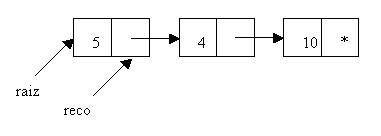

En el concepto anterior se vieron pequeños problemas para entender como funciona la recursividad, pero no se desarrollaron problemas donde conviene utilizar la recursividad.
Problema 1:
Imprimir la información de una lista simplemente encadenada de atrás para adelante.
El empleo de estructuras repetitivas para resolver este problema es bastante engorroso y lento (debemos avanzar hasta el último nodo e imprimir, luego avanzar desde el principio hasta el anteúltimo nodo y así sucesivamente)
El empleo de la recursividad para este problema hace más sencillo su solución.
Programa:
public class Recursividad {
class Nodo {
int info;
Nodo sig;
}
private Nodo raiz;
void insertarPrimero(int x)
{
Nodo nuevo = new Nodo ();
nuevo.info = x;
nuevo.sig=raiz;
raiz=nuevo;
}
public void imprimirInversa(Nodo reco) {
if (reco!=null) {
imprimirInversa(reco.sig);
System.out.print(reco.info+"-");
}
}
public void imprimirInversa () {
imprimirInversa(raiz);
}
public static void main(String[] ar) {
Recursividad r=new Recursividad();
r.insertarPrimero (10);
r.insertarPrimero(4);
r.insertarPrimero(5);
r.imprimirInversa();
}
}
Cuando llamamos al método recursivo le enviamos raiz y el parámetro reco recibe esta dirección.
Si reco es distinto a null llamamos recursivamente al método enviándole la dirección del puntero sig del nodo.
Por lo que el parámetro reco recibe la dirección del segundo nodo.

Podemos observar como en las distintas llamadas recursivas el parámetro reco apunta a un nodo. Cuando se van desapilando las llamadas recursivas se imprime primeramente el 10 luego el 4 y por último el 5.
Problema 2:
Recorrer un árbol de directorios en forma recursiva.
Programa:
import java.io.File;
public class Recursividad{
public void leer(String inicio,String altura)
{
File ar=new File(inicio);
String[] dir=ar.list();
for(int f=0;f<dir.length;f++){
File ar2=new File(inicio+dir[f]);
if (ar2.isFile())
System.out.println(altura+dir[f]);
if (ar2.isDirectory()) {
System.out.println(altura + "Directorio:"+dir[f].toUpperCase());
leer(inicio+dir[f]+"\\",altura+" ");
}
}
}
public static void main(String[] arguments)
{
Recursividad rec=new Recursividad();
rec.leer("d:\\windows\\","");
}
}
Para recorrer y visitar todos los directorios y archivos de un directorio debemos implementar un algoritmo recursivo que reciba como parámetro el directorio inicial donde comenzaremos a recorrer:
public void leer(String inicio,String altura)
Creamos un objeto de la clase File con el directorio que llega como parámetro y mediante el método list obtenemos todos los archivos y directorios de dicho directorio:
File ar=new File(inicio);
String[] dir=ar.list();
Mediante un for recorremos todo el vector que contiene la lista de archivos y directorios:
for(int f=0;f<dir.length;f++){
Creamos un objeto de la clase File para cada directorio y archivo:
File ar2=new File(inicio+dir[f]);
Luego de crear un objeto de la clase file podemos verificar si se trata de un archivo o directorio:
if (ar2.isFile())
System.out.println(altura+dir[f]);
if (ar2.isDirectory()) {
System.out.println(altura + "Directorio:"+dir[f].toUpperCase());
leer(inicio+dir[f]+"\\",altura+" ");
}
Si es un archivo lo mostramos y si es un directorio además de mostrarlo llamamos recursivamente al método leer con el directorios nuevo a procesar.
Problema 3:
Desarrollar un programa que permita recorrer un laberinto e indique si tiene salida o no.
Para resolver este problema al laberinto lo representaremos con una matriz de 10 x 10 JLabel.
El valor:
"0" Representa pasillo "1" Representa pared "9" Persona "s" Salida
A la salida ubicarla en la componente de la fila 9 y columna 9 de la matriz. La persona comienza a recorrer el laberinto en la fila 0 y columna 0. Los ceros y unos disponerlos en forma aleatoria (con la función random)
Programa:
import javax.swing.*;
import java.awt.*;
import java.awt.event.*;
class Laberinto extends JFrame implements ActionListener {
JLabel[][] l;
JButton b1;
JButton b2;
boolean salida;
Laberinto()
{
setLayout(null);
l=new JLabel[10][10];
for(int f=0;f<10;f++) {
for(int c=0;c<10;c++) {
l[f][c]=new JLabel();
l[f][c].setBounds(20+c*20,50+f*20,20,20);
add(l[f][c]);
}
}
b1=new JButton("Recorrer");
b1.setBounds(10,300,100,25);
add(b1);
b1.addActionListener(this);
b2=new JButton("Crear");
b2.setBounds(120,300,100,25);
add(b2);
b2.addActionListener(this);
crear();
}
public void crear()
{
for(int f=0;f<10;f++) {
for(int c=0;c<10;c++) {
int a=(int)(Math.random()*4);
l[f][c].setForeground(Color.black);
if (a==0)
l[f][c].setText("1");
else
l[f][c].setText("0");
}
}
l[9][9].setText("s");
l[0][0].setText("0");
}
public void recorrer(int fil,int col)
{
if (fil>=0 && fil<10 && col>=0 && col<10 && salida==false) {
if (l[fil][col].getText().equals("s"))
salida=true;
else
if (l[fil][col].getText().equals("0")) {
l[fil][col].setText("9");
l[fil][col].setForeground(Color.red);
recorrer(fil,col+1);
recorrer(fil+1,col);
recorrer(fil-1,col);
recorrer(fil,col-1);
}
}
}
public void actionPerformed(ActionEvent e)
{
if (e.getSource()==b1) {
salida=false;
recorrer(0,0);
if (salida)
setTitle("tiene salida");
else
setTitle("no tiene salida");
}
if (e.getSource()==b2)
crear();
}
public static void main(String[] ar)
{
Laberinto l=new Laberinto();
l.setBounds(0,0,300,400);
l.setVisible(true);
}
}
El método más importante es el recorrer:
public void recorrer(int fil,int col)
Primero verificamos si la coordenada a procesar del laberinto se encuentra dentro de los límites correctos y además no hayamos encontrado la salida hasta el momento:
if (fil>=0 && fil<10 && col>=0 && col<10 && salida==false)
Si entra al if anterior verificamos si estamos en la salida:
if (l[fil][col].getText().equals("s"))
salida=true;
En el caso que no estemos en la salida verificamos si estamos en pasillo:
if (l[fil][col].getText().equals("0")) {
En caso de estar en el pasillo procedemos a fijar dicha JLabel con el caracter "9" e intentamos desplazarnos en las cuatro direcciones (arriba, abajo, derecha e izquierda), este desplazamiento lo logramos llamando recursivamente:
l[fil][col].setText("9");
l[fil][col].setForeground(Color.red);
recorrer(fil,col+1);
recorrer(fil+1,col);
recorrer(fil-1,col);
recorrer(fil,col-1);
Problemas propuestos
- Desarrollar el juego del Buscaminas. Definir una matriz de 10*10 de JButton y disponer una 'b' para las bombas (10 diez) un cero en los botones que no tienen bombas en su perímetro, un 1 si tiene una bomba en su perímetro y así sucesivamente. Cuando se presiona un botón si hay un cero proceder en forma recursiva a destapar los botones que se encuentran a sus lados. Disponer el mismo color de frente y fondo de los botones para que el jugador no pueda ver si hay bombas o no.
import javax.swing.*;
import java.awt.*;
import java.awt.event.*;
class Buscaminas extends JFrame implements ActionListener
{
JButton [] [] bot;
JButton b1;
Buscaminas ()
{
setLayout (null);
bot = new JButton [10] [10];
for (int f = 0 ; f < 10 ; f++)
{
for (int c = 0 ; c < 10 ; c++)
{
bot [f] [c] = new JButton ("0");
bot [f] [c].setBounds (20 + c * 41, 50 + f * 41, 41, 41);
bot [f] [c].setBackground (Color.lightGray);
bot [f] [c].setForeground (Color.lightGray);
bot [f] [c].addActionListener (this);
add (bot [f] [c]);
}
}
b1 = new JButton ("Reiniciar");
b1.setBounds (20, 470, 100, 30);
add (b1);
b1.addActionListener (this);
disponerBombas ();
contarBombasPerimetro ();
}
void disponerBombas ()
{
int cantidad = 10;
do
{
int fila = (int) (Math.random () * 10);
int columna = (int) (Math.random () * 10);
if (bot [fila] [columna].getText ().equals ("b") == false)
{
bot [fila] [columna].setText ("b");
cantidad--;
}
}
while (cantidad != 0);
}
void contarBombasPerimetro ()
{
for (int f = 0 ; f < 10 ; f++)
{
for (int c = 0 ; c < 10 ; c++)
{
if (bot [f] [c].getText ().equals ("0") == true)
{
int cant = contarCoordenada (f, c);
bot [f] [c].setText (String.valueOf (cant));
}
}
}
}
int contarCoordenada (int fila, int columna)
{
int total = 0;
if (fila - 1 >= 0 && columna - 1 >= 0)
{
if (bot [fila - 1] [columna - 1].getText ().equals ("b") == true)
total++;
}
if (fila - 1 >= 0)
{
if (bot [fila - 1] [columna].getText ().equals ("b") == true)
total++;
}
if (fila - 1 >= 0 && columna + 1 < 10)
{
if (bot [fila - 1] [columna + 1].getText ().equals ("b") == true)
total++;
}
if (columna + 1 < 10)
{
if (bot [fila] [columna + 1].getText ().equals ("b") == true)
total++;
}
if (fila + 1 < 10 && columna + 1 < 10)
{
if (bot [fila + 1] [columna + 1].getText ().equals ("b") == true)
total++;
}
if (fila + 1 < 10)
{
if (bot [fila + 1] [columna].getText ().equals ("b") == true)
total++;
}
if (fila + 1 < 10 && columna - 1 >= 0)
{
if (bot [fila + 1] [columna - 1].getText ().equals ("b") == true)
total++;
}
if (columna - 1 >= 0)
{
if (bot [fila] [columna - 1].getText ().equals ("b") == true)
total++;
}
return total;
}
void desactivarJuego ()
{
for (int f = 0 ; f < 10 ; f++)
{
for (int c = 0 ; c < 10 ; c++)
{
bot [f] [c].setEnabled (false);
}
}
}
void reiniciar ()
{
setTitle ("");
for (int f = 0 ; f < 10 ; f++)
{
for (int c = 0 ; c < 10 ; c++)
{
bot [f] [c].setText ("0");
bot [f] [c].setEnabled (true);
bot [f] [c].setBackground (Color.lightGray);
bot [f] [c].setForeground (Color.lightGray);
}
}
disponerBombas ();
contarBombasPerimetro ();
}
public void actionPerformed (ActionEvent e)
{
if (e.getSource () == b1)
{
reiniciar ();
}
for (int f = 0 ; f < 10 ; f++)
{
for (int c = 0 ; c < 10 ; c++)
{
if (e.getSource () == bot [f] [c])
{
if (bot [f] [c].getText ().equals ("b") == true)
{
setTitle ("Boooooooooooooomm");
desactivarJuego ();
}
else
if (bot [f] [c].getText ().equals ("0") == true)
{
recorrer (f, c);
}
else
if (bot [f] [c].getText ().equals ("1") == true ||
bot [f] [c].getText ().equals ("2") == true ||
bot [f] [c].getText ().equals ("3") == true ||
bot [f] [c].getText ().equals ("4") == true ||
bot [f] [c].getText ().equals ("5") == true ||
bot [f] [c].getText ().equals ("6") == true ||
bot [f] [c].getText ().equals ("7") == true ||
bot [f] [c].getText ().equals ("8") == true)
{
bot [f] [c].setBackground (Color.yellow);
bot [f] [c].setForeground (Color.black);
}
}
}
}
verificarTriunfo ();
}
void verificarTriunfo ()
{
int cant = 0;
for (int f = 0 ; f < 10 ; f++)
{
for (int c = 0 ; c < 10 ; c++)
{
Color col = bot [f] [c].getBackground ();
if (col == Color.yellow)
cant++;
}
}
if (cant == 90)
{
setTitle ("Ganooooooooo");
desactivarJuego ();
}
}
void recorrer (int fil, int col)
{
if (fil >= 0 && fil < 10 && col >= 0 && col < 10)
{
if (bot [fil] [col].getText ().equals ("0"))
{
bot [fil] [col].setText (" ");
bot [fil] [col].setBackground (Color.yellow);
recorrer (fil, col + 1);
recorrer (fil, col - 1);
recorrer (fil + 1, col);
recorrer (fil - 1, col);
recorrer (fil - 1, col - 1);
recorrer (fil - 1, col + 1);
recorrer (fil + 1, col + 1);
recorrer (fil + 1, col - 1);
}
else
if (bot [fil] [col].getText ().equals ("1") == true ||
bot [fil] [col].getText ().equals ("2") == true ||
bot [fil] [col].getText ().equals ("3") == true ||
bot [fil] [col].getText ().equals ("4") == true ||
bot [fil] [col].getText ().equals ("5") == true ||
bot [fil] [col].getText ().equals ("6") == true ||
bot [fil] [col].getText ().equals ("7") == true ||
bot [fil] [col].getText ().equals ("8") == true)
{
bot [fil] [col].setBackground (Color.yellow);
bot [fil] [col].setForeground (Color.black);
}
}
}
public static void main (String [] ar)
{
Buscaminas m = new Buscaminas ();
m.setBounds (0, 0, 470, 600);
m.setVisible(true);
}
}